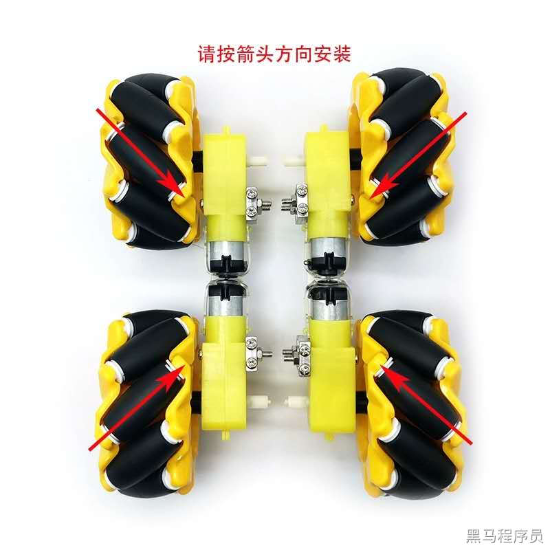

<!DOCTYPE lake>
<h2 data-lake-id="iABy2" id="iABy2"><span data-lake-id="u822bdd61" id="u822bdd61">安装方向</span></h2><p data-lake-id="u4a8b7473" id="u4a8b7473"></p><h2 data-lake-id="Haj70" id="Haj70"><span data-lake-id="ubbb9deab" id="ubbb9deab">移动方式</span></h2><p data-lake-id="ud7093159" id="ud7093159"><span data-lake-id="uaf3f63e9" id="uaf3f63e9">​</span><br/></p><h3 data-lake-id="yFnBD" id="yFnBD"><span data-lake-id="u686ac246" id="u686ac246">前进和后退</span></h3><p data-lake-id="ubdda568b" id="ubdda568b"></p><h3 data-lake-id="ZopHj" id="ZopHj"><span data-lake-id="u9b50c8f0" id="u9b50c8f0">左前右前</span></h3><p data-lake-id="u8564ebc8" id="u8564ebc8"></p><h3 data-lake-id="YIQh1" id="YIQh1"><span data-lake-id="u7d90a0ee" id="u7d90a0ee">左平移右平移</span></h3><p data-lake-id="u238fdc04" id="u238fdc04"></p><h3 data-lake-id="PXw4b" id="PXw4b"><br/></h3><h3 data-lake-id="YuICr" id="YuICr"><span data-lake-id="ufa879c9c" id="ufa879c9c">左后右后</span></h3><p data-lake-id="u2053ad91" id="u2053ad91"></p><h3 data-lake-id="eiJ6X" id="eiJ6X"><span data-lake-id="udad8c6bb" id="udad8c6bb">顺时针逆时针旋转</span></h3><p data-lake-id="u37cc84d9" id="u37cc84d9"></p>